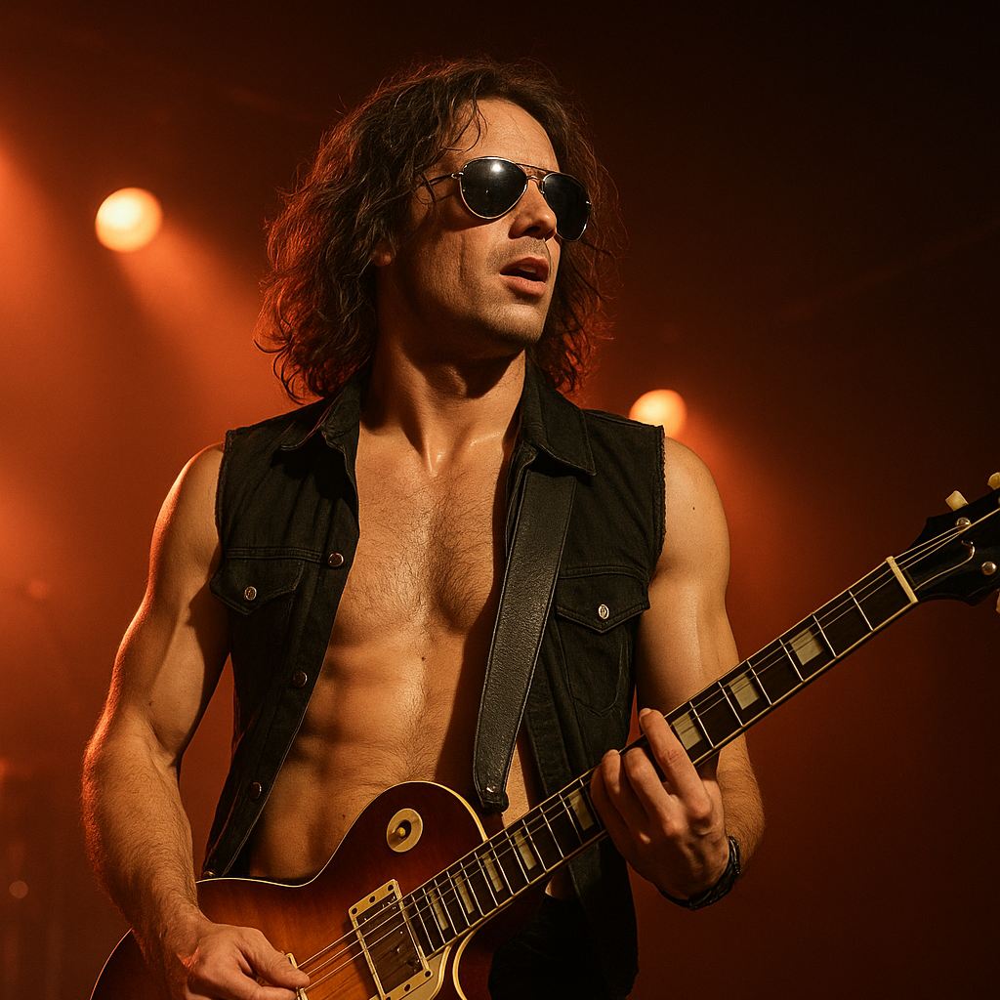

Dream Loud. Burn fast!
You’ve stumbled into the official den of Steel Reverie - the rock band that burned their way out of the ’70s and into legend.
A brief History
Formation: Jack and Danny met in a grimy LA club in ‘69. Mick was passed out in the alley out back with a drumstick in his boot. Lena joined after their first bassist flaked before a show. First Album: Fire Sermon (1971) Breakthrough Record: Ashes of Eden (1974) On Tour: Known for blowing the roof off every venue—and sometimes literally burning it down. Banned from three countries. Band Motto: "Dream Loud. Burn Fast."

Jack "Razor" Vance – Lead Guitar
Charismatic and wild on stage, Jack’s solos melt faces and his Les Paul is practically an extension of his soul.Danny Blaze – Vocals / Rhythm Guitar
The frontman with a whiskey-soaked voice and a leather jacket older than most of their fans. Writes most of the lyrics—poetic, angry, and raw.Mick Thunder – Drums
Animalistic behind the kit. Known for doing a ten-minute solo mid-set while shirtless and sweating bullets. A true heartbeat of the band.Lena Steele – Bass Guitar / Backing Vocals
Cool, composed, and effortlessly badass. Keeps the groove tight and adds harmonies that give their songs a haunting depth.Ricky "Keys" Malone – Keyboards / Synth
Introduced later in their career when their sound evolved. Adds that prog-rock touch with vintage Moog synths and a Hammond organ.This is an archive for a forgotten band from the 80s/90s. Some of the media is missing or corrupted...